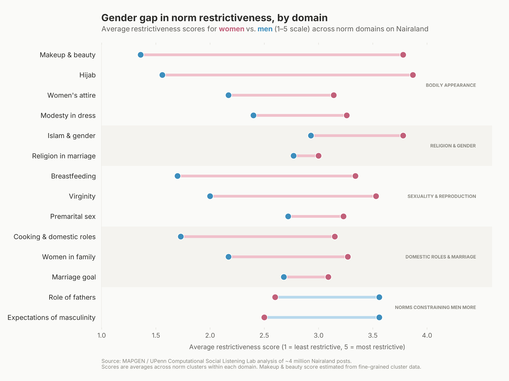

Using large language models, we extracted and scored 31,456 gender norm beliefs from Nairaland — Africa's largest online forum. The data are freely available for researchers and practitioners working on gender in Nigeria and West Africa.
Methodology
Traditional survey and ethnographic methods capture norms in structured, often socially desirable contexts. This project uses naturalistic online discourse to surface what people actually say and believe. Download the report for more details.
We collected approximately 4 million posts from Nairaland — Africa's largest online forum, founded in 2005 with 3M+ registered members. Posts span 7 years of discussion across dozens of topic boards. Dictionary-based filtering and GPT-4o-mini norm detection narrowed the corpus to 146,000 posts containing explicit gender norm statements.
GPT-4o annotated each norm-containing post to extract the underlying belief, identify the social actor, and score two dimensions: restrictiveness (how much the norm limits decision-making freedom, 1–5) and burden (severity of sanctions for non-compliance, 1–5). Norms were also classified as injunctive (prescriptive) or descriptive. Three Nigerian annotators independently validated a 50-post sample, yielding 96–100% agreement.
Sentence-BERT embeddings were computed for all 31,456 beliefs, then grouped using agglomerative clustering (cosine similarity threshold 0.5). This produced 740 fine-grained norm clusters, which were manually consolidated into 38 coarse thematic groups. All scores were computed separately for women and men to enable direct gender comparisons.
Key findings
Across all 38 coarse norm themes, norms are more restrictive for women than for men. The gap is not evenly distributed: appearance, domestic, and religious norms show the largest differences.
Figure 1 — Diverging dot plot
Figure 2 — Restrictiveness & burden scores
Figure 3 — Bubble chart
Data explorer
Search, sort, and filter the full dataset. Click any row to see sample beliefs and example forum posts. All data are available for download below.
| Theme ↕ | N ↓ | R Gap ↕ |
|---|
Data & resources
All data are released freely for research and non-commercial use. If you use this dataset, please cite the MAPGEN project and the UPenn Computational Social Listening Lab.